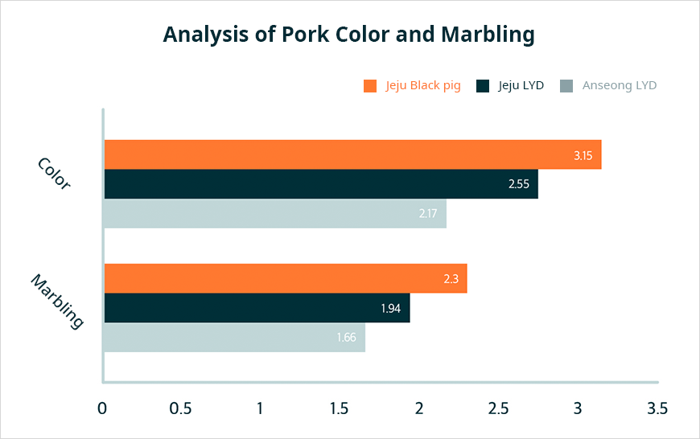
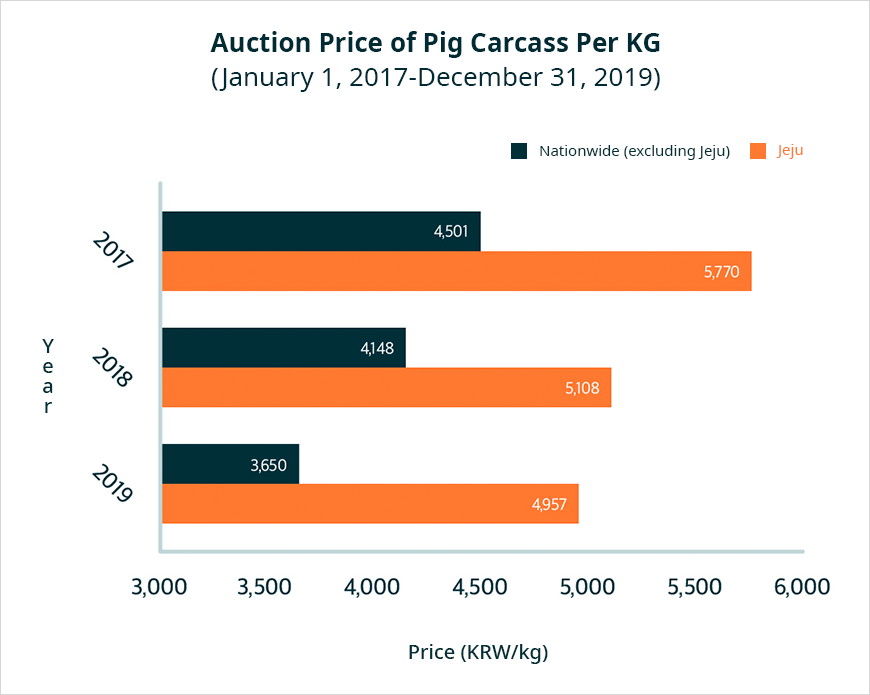

기획취재콘텐츠
- Home
- 제주라이프
- 기획취재콘텐츠
Jeju pork is famously delicious for a good reason. Jeju’s Pork Industry Part 2새로운 글


The Taste of Nature: Clean Jeju Pork
As an island, Jeju is blessed with natural barriers that prevent the introduction of malignant livestock diseases. The island’s pure air, clear water, and mild climate also create an environment perfect for high-quality pork production. The superb quality of Jeju pork has been substantiated through various researches.


※ Source: Report on Meat Quality Analysis By Key Pork Producing Region in Korea
Jeju’s black pork is reddish in color and contains more marbling than standard pork. It also contains higher levels of polyunsaturated fatty acid and lowers a person’s cholesterol, which makes it a healthy alternative to standard pork. The pork’s texture is dense and feels pleasant in the mouth, and the taste of its fat never fails to mesmerize food connoisseurs.
Today, around 500,000 pigs are grown in Jeju. A total of 25% of the pigs (around 140,000) are black pigs. White pig breeds grown in Jeju are LYD pigs, a breed introduced on the island after the industrialization of pig farming. The breed is a combination of three breeds: Danish Landrace pigs, famous for their chewy texture; Yorkshire pigs, characterized by their large size and superb breeding capabilities; and Durok pigs, famous for their rich taste.


※ Source: Korea Institute for Animal Products Quality Evaluation, Livestock Distribution Information, Auction Price By Period격
※ Data collected between January 1, 2017 and December 31, 2019
※ Data collected between January 1, 2017 and December 31, 2019
Jeju pigs are grown in clean areas using high-quality breeds and advanced technologies. The high quality of Jeju pork is widely known, which is why it is sold as a premium product. Between 2017 and 2019, the average auction price for pork across Korea was KRW 4,104/kg. In the same period, Jeju reported an average auction price that is 20% higher at KRW 5,282. Moreover, Jeju-produced pork accounts for 25% of Korea’s total pork distribution
Jeju Pork Brand Development
Jeju strives to produce pork of consistent quality by developing pig breeds, managing livestock growth environment, and building production and quality control systems. In addition, Jeju is developing the senary industry to include pork distribution and processed pork products and enhance the region’s industrial competitiveness. Jejudony is the premium pork brand developed by the Jeju Pig Farmers Cooperative. Under the brand, 23 farms with brand contracts, 50 farms with export contracts, and 87 breeding pig suppliers in Jeju work together to produce pork with consistent quality. Jeju farmers spare no effort in distributing and marketing Jeju’s pork brand. The Jeju Donbgu Livestock Farmers Cooperative actively invests in producing high-quality pork and promotes shared growth with the local community by building smart pig sheds and eco-friendly systems. The cooperative has also created the Jeju pork processing and distribution brand, Montrak, to introduce the taste of Jeju pork to consumers outside the island.
From Farm to Table: Premium Jeju Pork Brand, Jejudony
Jejudony is a premium Jeju pork brand managed by the Jeju Pig Farmers Cooperative (Representative Ko Gwon-jin). The Jeju Pig Farmers Cooperative created the brand in 2007 for pork production management and distribution. Under the brand, the institution systemically manages the production and distribution of high-quality standardized pork that caters to the consumers’ preferences.
- Ko Gwon-jin, who is the representative of Jeju Pig Farmers Cooperative, runs a quality check on the pork. -
Jeju Pig Farmers Cooperative organizes Jeju pig farmers for integrated breeding, feeding, specifications management, and growth environment management to produce and distribute Jeju-Doji pork and ensure its distinguished quality from other pork.
According to the representative, integration refers to a system that operates and manages each stage of the Jejudony production and distribution cycle, including breeding, feeding, distribution, export, and processing.

The Jejudony Genetics Center, founded in 2012 by the Jeju Pig Farmers Cooperative, imports breeding pigs with a good pedigree, who will be cross-breed with pigs native to Jeju. The center then distributes the developed breeds to farmers across the island. In 2019, 3,539 breeding pigs were distributed to 87 farms, and 25% of the 278 pig farmers in Jeju received breeding pigs from the Jejudony Genetics Center.
Pig farms use the supplied breeding pigs to produce high-quality pork. Growers would feed them with odor-reducing and productivity-enhancing animal feeds produced by the assorted feed factory operated by the Jeju Pig Farmers Cooperative. The pig waste discharged from the pig sheds is processed by the Animal Waste Resourcification Plant of the Jeju Pig Farmers Cooperative, who turns the waste into liquid fertilizers, compost, and agricultural water. This process allows farmers to concentrate on growth environment management and quality control. The Jeju Pig Farmers Cooperative also operates a veterinary clinic offering farm-specific care, providing production and distribution consultations tailored to each farm, and offering specialized support services for producing high-quality pork.
In 2018, the Jeju Pig Farmers Cooperative built the Livestock Packing Center. The center sits on a 26,8511 m2 area with a total floor area of 10,515 m2, consisting of a single underground floor and 3 floors above the ground. The center is capable of slaughtering 1,500 pigs per day. It also has wastewater treatment facilities with a capacity of 1,000 t per day, along with a cross-contamination prevention system. In 2019 alone, the center slaughtered 354,438 Jeju pigs.
The Jejudony brand was awarded an outstanding livestock brand certification for eight years in a row in recognition of its superb quality and systematic management. Furthermore, the brand’s pork product won second prize at the KAPF-Ministry of Agriculture, Food and Rural Affairs Brand Competition and a presidential award at the Korea Livestock Brand Competition.
- The export meat processing plant carries out the final stage of delivering pork to consumers,
from cutting to vacuum packaging. -
from cutting to vacuum packaging. -
Jejudony is widely loved by consumers as a reliable pork brand, and its products are processed at the Export Meat Processing Plant (Jeju) and the Yongin Meat Processing Plant of the Jeju Pig Farmers Cooperative. The pork is then supplied to more than 50 restaurants and 22 supermarkets in Jeju as well as via Market Cully, a premium online food distribution platform. Jejudony is also available in Meatbox, a direct livestock trading platform.
- The export meat processing plant of the Jeju Pig Farmers Cooperative also operates its own store,
where visitors can purchase fresh pork for low prices. -
where visitors can purchase fresh pork for low prices. -
The Jeju Pig Farmers Cooperative plans to improve the brand awareness of Jeju Pig Farmers Cooperative and develop more consumer-tailored products. Sampling events are held by the cooperative to further promote high-quality Jeju pork to consumers across Korea. In keeping with the consumers’ preference for small packaging, the cooperative aims to build systems, secure facilities, and foster a workforce to accommodate this need. It also hopes to secure an online sales channel for small-packaging wholesale and retail options.
- ⓒJeju Pig Farmers Cooperative -
In 2020, the Jeju Pig Farmers Cooperative has been developing an online mall and mobile applications for the Jejudony brand, which is also subjected to aggressive marketing strategies to accentuate the benefits of Jeju pork. We also plan to continue with our sampling events in collaboration with other local events.
- Yang Gyeongmi, Team Leader, Economy and Business Division, Jeju Pig Farmers Cooperative
The cooperative spares no effort in building its quality and production control capabilities. The Artificial Insemination Center was established within the Jejudony Genetics Center to provide Jeju breeding pigs with consistent quality, and it serves to also secure a stable supply of sperm that will improve livestock conception rate during summer. The Livestock Packing Center has installed VCS 2000 (pig carcass assessment system) along its slaughtering lines to collect data on the total slaughter weight, slaughter percentages, and total weight and percentages of primal cuts. The data will inform the cooperative’s efforts in advancing its slaughtering, grading, and processing systems and in improving the cooperative’s competitive edge.